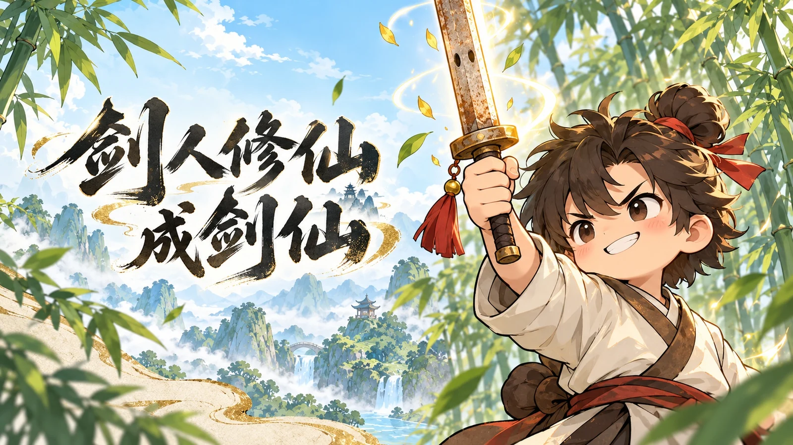
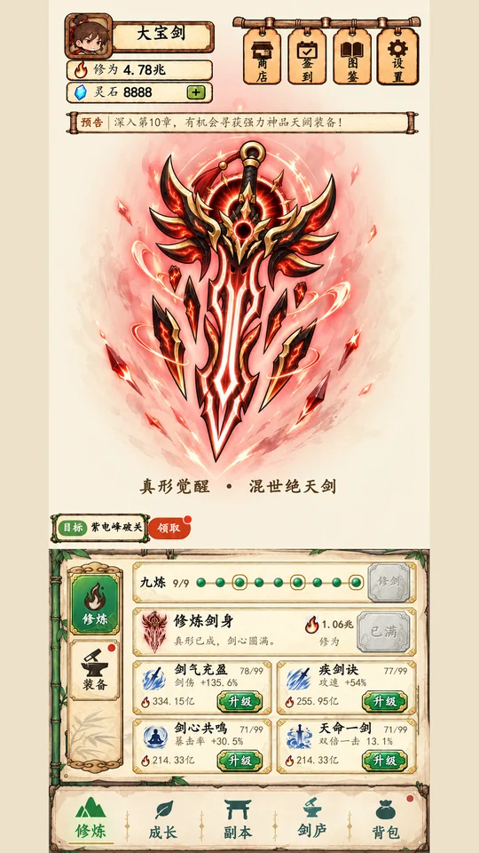
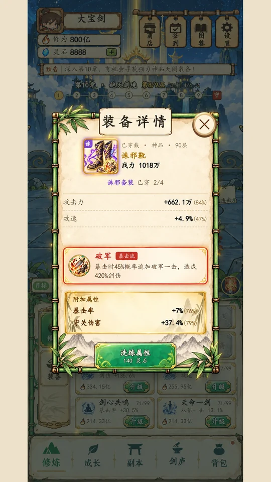
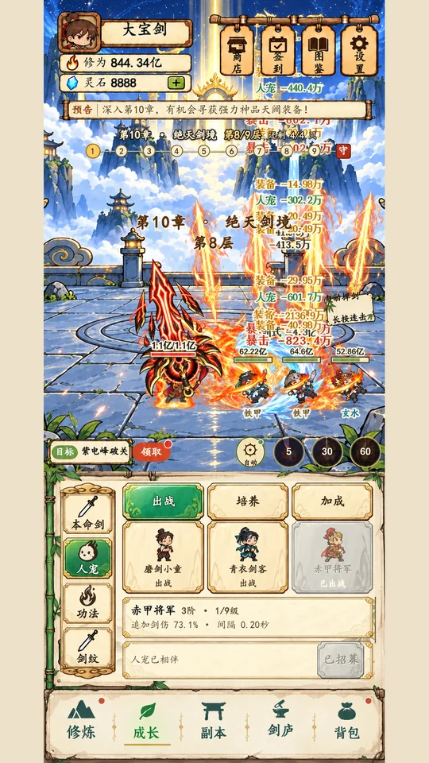

剑人修仙成剑仙

玩法特色
你的剑，越修越不凡。
修本命剑，寻神品装，闯秘境。让每一次成长，都化成下一剑的锋芒。

修炼与成长
从凡剑，到混世绝天剑
修炼剑身、淬炼剑意，解锁本命剑的不同真形。九炼圆满，见证神剑觉醒的锋芒。
九炼真形神剑觉醒成长养成
装备与流派
一身神品，一套自己的剑路
收集冠、甲、靴、带，搭配套装与特殊神通。洗练极品属性，把暴击、连斩、剑式与控制融进你的剑路。
套装秘技极品属性特殊神通
剑式与历练
焚天、诛邪、寒魄，剑剑有声势
烈焰剑幕、雷霆巨剑、寒冰剑域轮番出手。携人宠同行，挑战秘境与剑塔，在剑庐积蓄修行所得。
三系剑式人宠同行秘境剑塔AI美化宣传画面
神剑、神品与万剑齐发。
点击放大查看 · 左右滑动切换
以上宣传图基于游戏画面经AI美化；下方视频为高阶展示存档的实机录制，配游戏现有背景音乐。实际效果与内容以游戏内为准。
剑人修仙成剑仙
下一位剑仙，会是你吗？
游戏正在筹备上线，正式获取入口将在这里公布。
敬请期待